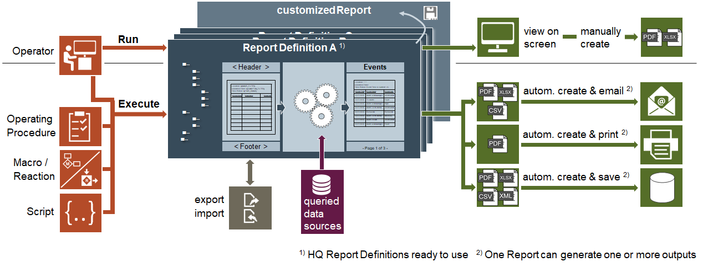

Reports

The main function of the reports application in Desigo CC is to collect data from the runtime system and allow you to present this data in a customized manner.
This section provides background information on Reports of Desigo CC . For related procedures, see the step-by-step section.